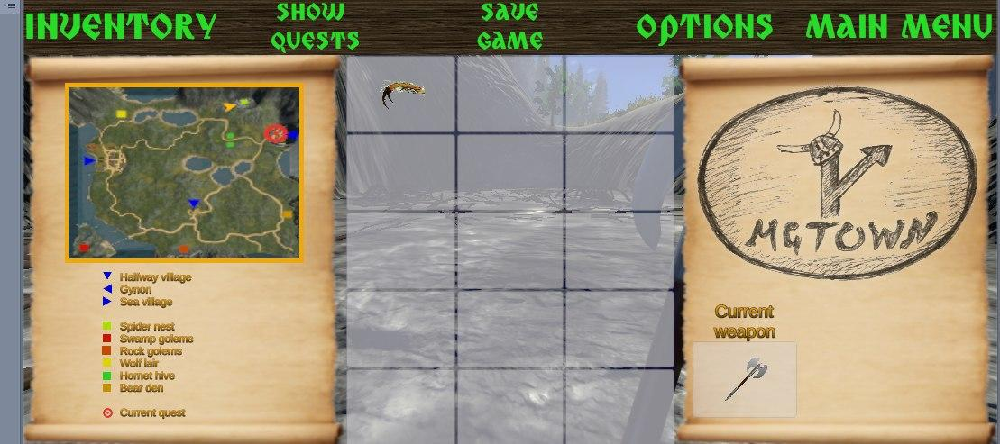
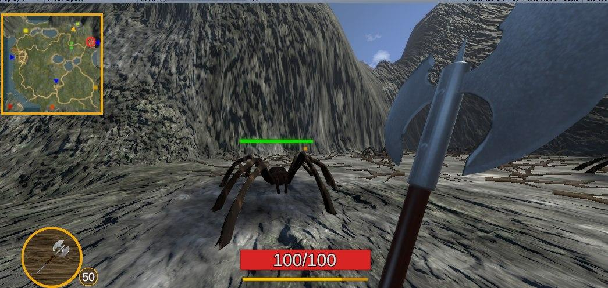
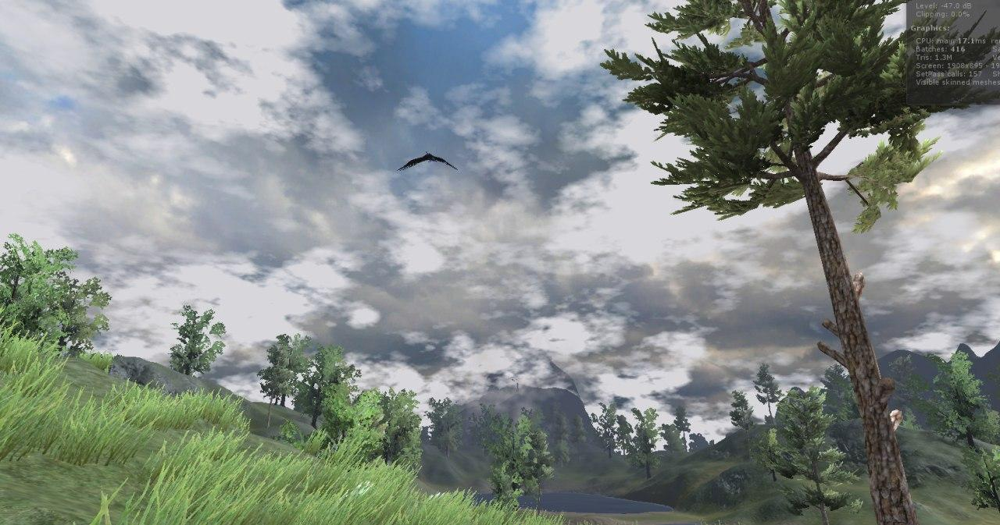

Початок гри
Гра починається зі сцени на якій головний герой гри,
вимушений в черговий раз виконати отримує завдання доставити
певний лист із таємний текстом, який він дізнається під час того
як розкриває листа.
Ігровий світ та час
Дії відбуваються на одній локації, але весь її діапазон стає доступним
після здобуття досвіду персонажем.
Рух
Персонаж вільно може переміщуватися всією ігровою картою за однієї умови,
що при зустрічі із ворожим мобом бій розпочнеться автоматично не зі сторони
гравця, в залежності від агресивності неігрового персонажу та часу доби. Моб
проявлятиме агресію до персонажу, якщо той зайде на “його територію”.
Пересування може здійснюватися пішки, чи по вплав воді.
Ресурси
Основними ресурсами гри є здоров’я та ігрова валюта. Здоров’я автоматично
відновлюється на певний процент через кожен проміжок часу. Ігрова валюта здобувається
такими способами:
- Виконання деяких з основних ігрових квестів;
- виконання побічних ігрових квестів;
- знаходження валюти у скринях та секретних скринях;
- продаж ресурсів, що випадають при вбивстві мобів.
Персонаж гравця
Гра представлена видом від першого лиця з метою кращого поглиблення в
ігровий сюжет. Як було сказано вище, головний герой не має певного ім’я, бо він
є уособленням кожного пригніченого чоловіка.
Фотографії з гри



3D Модель павука з гри
Відкрити модель павука